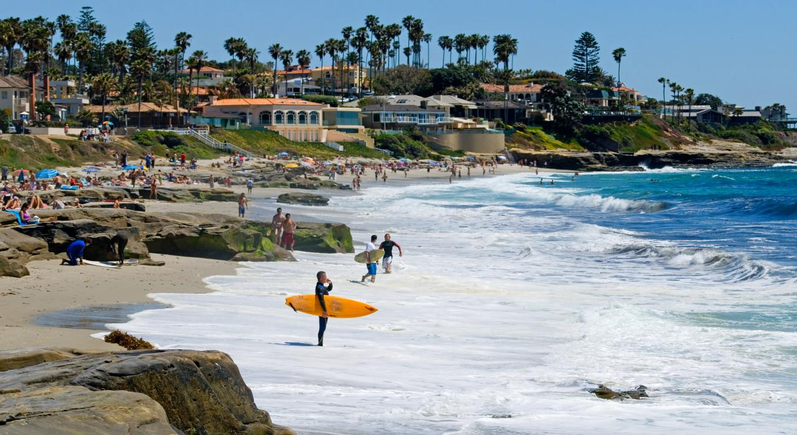
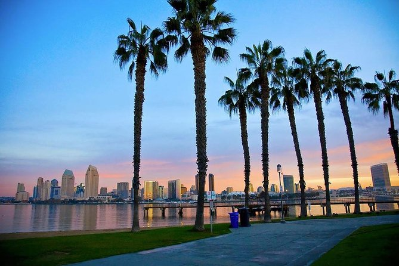

Una de les meues ciutats favorites és San Diego situada a Califòrnia (EUA).
 Sempre que tinc temps aprofite per escapar-me amb la meua furgoneta càmper, bé per a fer turisme o per a practicar esport.
Soc un apassionat dels esports extrems, especialment dels que es practiquen en aigua i neu. Surf, kitesurf,
wakeboard i snowboard serien els que practique tot sovint.